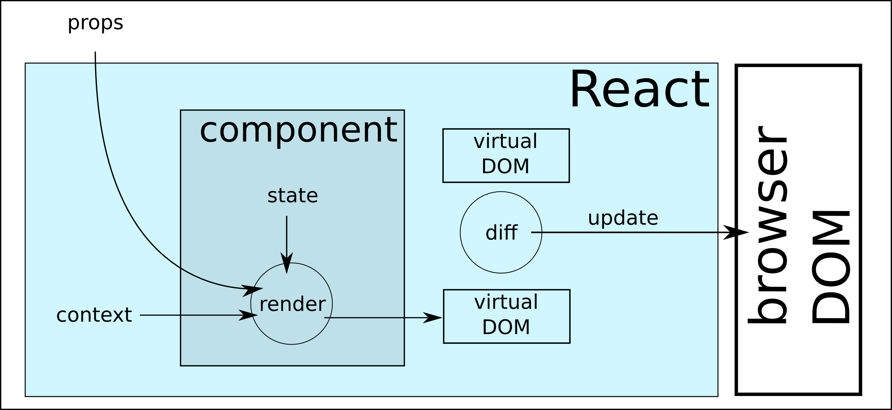

React
and a little Meteor
A lightning-fast opinionated overview
Where does React come from?
- Facebook production: battle-tested, scalable, supported
- User Interface: focused, limited
- a solution to modern UI issues:
- synchronizing multiple DOM elements
- event storms
- maintainability / evolutivity
“React is a great solution to a real problem backed by a rich and talented company.”
React is...

a technology

(intermission)
Comment = React.createClass({
render: function() {
return (
{this.props.author}
{this.props.children}
);
}
});
(more code!)
CommentList = React.createClass({
render: function() {
return (
<Comment author="Pete Hunt">
This is one comment
</Comment>
<Comment author="Jordan Walke">
This is *another* comment
</Comment>
);
}
});
(proof by code)
meteor add react
meteor add kadira:react-layout
FlowRouter.route('/', {
action() {
ReactLayout.render(MyReactComponent, {props});
}
});